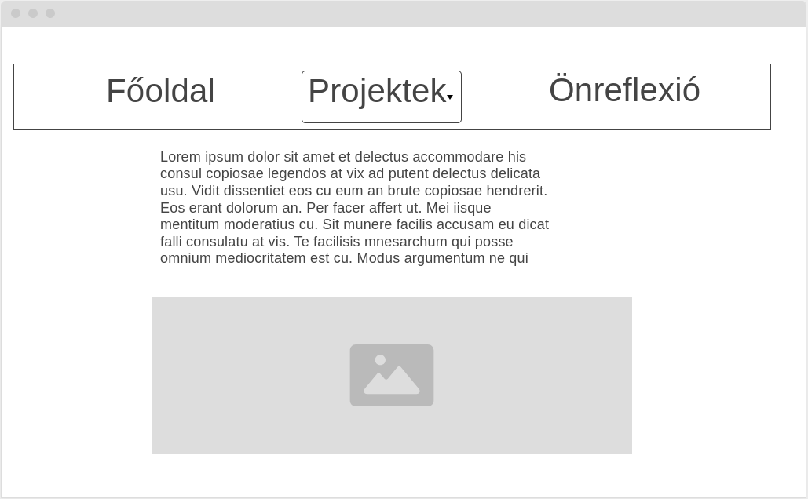
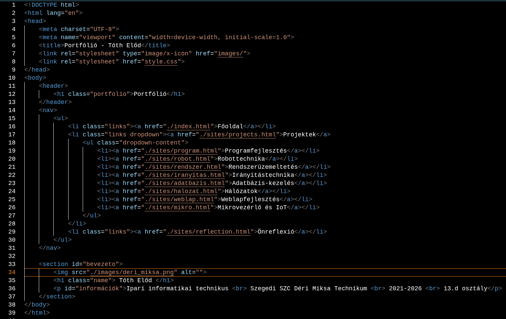

A projekt során elsajátítottam a modern webfejlesztés teljes eszköztárát. Megtanultam, hogyan építhetek fel skálázható, karbantartható alkalmazásokat, amelyekben a kódstruktúra áttekinthető. Emellett gyakorlatot szereztem a felhasználói felületek tesztelésében. A különböző technológiák integrálása során kiemelt figyelmet fordítottam a biztonsági szempontokra és a felhasználóbarát élmény biztosítására.

